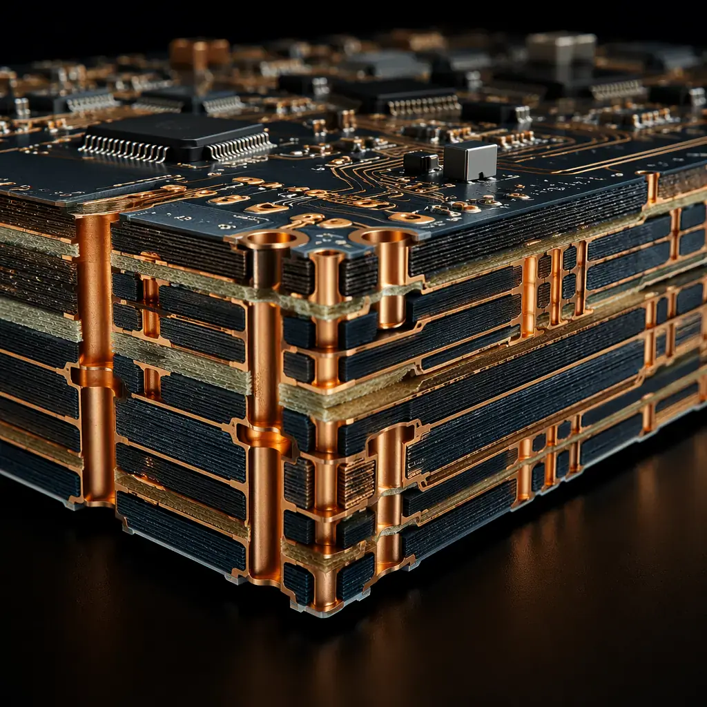
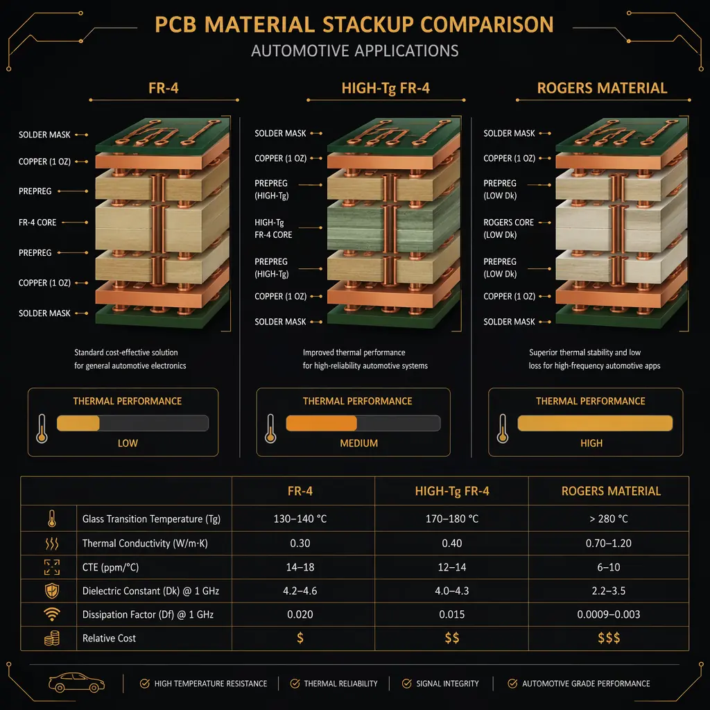
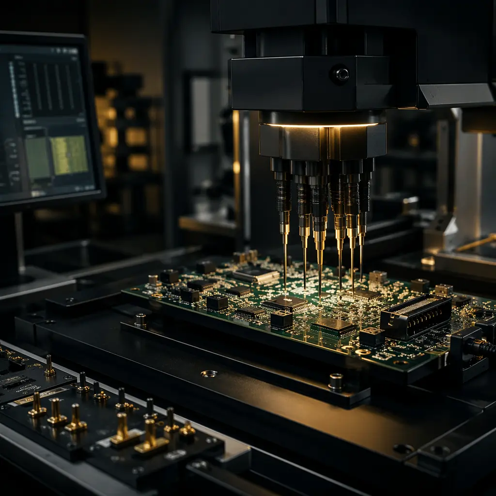
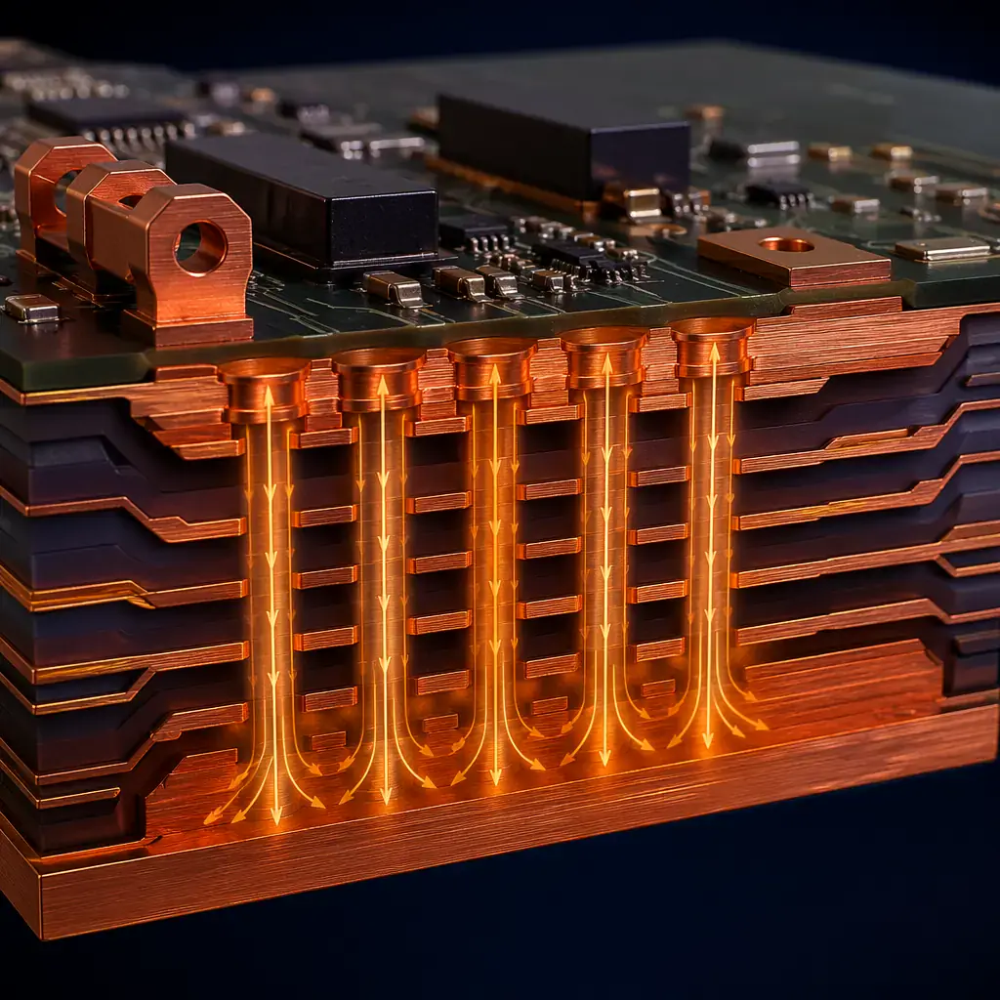
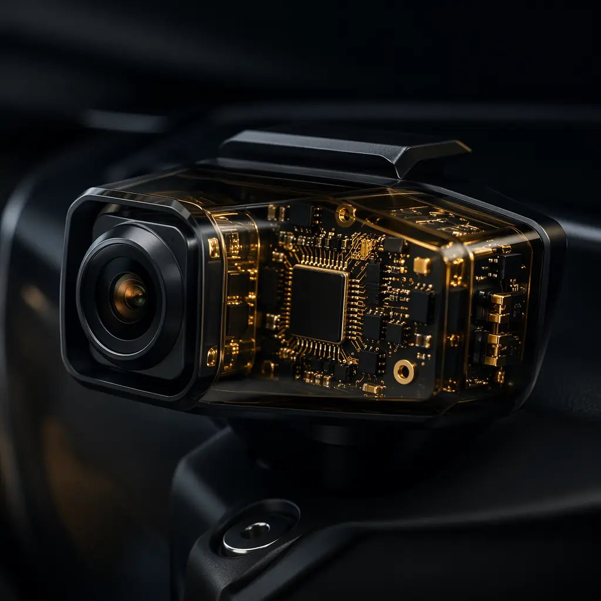

The automotive electronics market is projected to reach $420 billion by 2028, driven by ADAS, electrification, and autonomous driving. But automotive PCBs are not just "regular PCBs with a certification." They operate in environments where failure means more than a product return — it means safety recalls, regulatory penalties, and liability exposure measured in millions.
At Huaxing PCBA, our IATF 16949:2016 certified facility produces automotive-grade PCBs for ADAS controllers, battery management systems, and infotainment platforms. This guide covers what buyers and engineers need to know before selecting an automotive PCB supplier.
Why Automotive PCBs Are Fundamentally Different
A consumer electronics PCB operates at room temperature for 2-3 years. An automotive PCB must survive -40°C cold starts, 150°C under-hood temperatures, 85°C/85% RH humidity exposure, and continuous vibration — for 15 years. These differences cascade into every manufacturing decision:

Key Difference: Automotive PCB qualification is not a "test at the end" process. It requires documented process control at every manufacturing step — material traceability, SPC on every critical dimension, and full PPAP (Production Part Approval Process) documentation. A single unqualified process change can invalidate years of qualification data.
IATF 16949: What It Actually Requires from PCB Manufacturers
IATF 16949 is not just ISO 9001 with automotive branding. It adds specific requirements for defect prevention, supply chain risk management, and continuous improvement that directly affect PCB quality:
Full Material Traceability — Lot to PCB
Every laminate lot, copper foil batch, and solder mask drum must be traceable to the finished PCB through the entire manufacturing process. In our facility, this is enforced via barcode scanning at each process step with full ERP integration.
Statistical Process Control (SPC) on Critical Dimensions
Trace width, dielectric thickness, and hole registration must be monitored with SPC charts — not just final inspection sampling. Our production lines log real-time measurements at each imaging and lamination stage, with automatic alerts when any parameter drifts beyond ±3σ.
PPAP Level 3 Documentation
Full PPAP submission includes Design FMEA, Process FMEA, Control Plan, Measurement System Analysis (MSA), and capability studies (Cpk ≥ 1.67) for all critical characteristics. This is a 40+ page package per part number — not a one-page certificate.
Annual Layout Re-qualification
IATF 16949 requires annual re-validation of the manufacturing process for each PCB design. Changes in laminate supplier, plating chemistry, or equipment require re-qualification before production resumes. See our supplier audit checklist for the 5 questions that reveal whether a factory actually does this.
Automotive-Grade Materials: Beyond Standard FR-4
Standard FR-4 (Tg 130-140°C) is not rated for automotive under-hood applications. The material stack-up must be engineered for the specific thermal environment:

| Application Zone | Temperature Range | Recommended Material | Tg / Td |
|---|---|---|---|
| Cabin electronics (infotainment, body control) | -40°C to +85°C | High-Tg FR-4 | Tg 170-180°C |
| Engine bay (ECU, sensors) | -40°C to +150°C | High-Tg FR-4 / Polyimide | Tg 180-200°C |
| Radar/LiDAR (77GHz RF) | -40°C to +125°C | Rogers 4350B / PTFE | Tg 280°C |
| Battery pack (BMS, cell monitoring) | -40°C to +125°C | High-Tg FR-4 + heavy copper | Tg 170-180°C, Cu 3-6oz |
Our complete PCB materials guide covers the full range of high-frequency and high-temperature laminates, including Rogers, ceramic-filled PTFE, and polyimide options available in our supply chain.
Reliability Testing: The 5 Tests That Separate Automotive from Commercial
IPC Class 2 (commercial electronics) and IPC Class 3 (automotive/aerospace) differ in three core areas: plating thickness (25μm vs 20μm minimum in barrel), annular ring requirements, and acceptance criteria for voids and delamination. But automotive qualification goes further with environmental stress testing:

Thermal Shock / Thermal Cycling (AEC-Q100)
1000 cycles from -40°C to +125°C (or -55°C to +150°C for Grade 0). PCBs are tested post-cycling for interconnect resistance change ≤ 10% and no evidence of barrel cracking or pad lifting in microsection analysis. This simulates 15 years of engine start-stop cycles.
CAF (Conductive Anodic Filament) Resistance
85°C / 85% RH with 100V DC bias for 1000 hours. Measures insulation resistance between adjacent vias and traces. CAF failure — where copper ions migrate along glass fibers forming a conductive path — is the #1 field failure mechanism in high-density automotive PCBs. Our HDI process (detailed here) uses laser-drilled microvias specifically to avoid CAF-prone glass bundle interfaces.
IST (Interconnect Stress Testing)
Powered thermal cycling at the coupon level — the industry's fastest method for detecting weak interconnects. IST cycles to 150°C in under 3 minutes, identifying plating voids and poor barrel quality that take weeks to appear in air-to-air cycling. We perform IST on every new automotive design qualification.
Highly Accelerated Stress Test (HAST)
130°C / 85% RH at elevated pressure for 96 hours. Accelerates moisture-induced failure mechanisms including delamination, CAF, and electrochemical migration. Our testing methods guide covers the full test suite we perform in-house.
Solder Joint Reliability — Thermal Drop Shock
For BGA and QFN packages common in ADAS processors, thermal drop shock testing simulates the rapid temperature change when a vehicle moves from a heated garage to -30°C ambient. Solder joint cracks under BGA corners are the primary failure mode. Our X-ray inspection and cross-section analysis (PCBA process details) verify joint integrity at 100% for automotive builds.
Thermal Management for Power Electronics
Automotive power PCBs — motor controllers, DC-DC converters, on-board chargers — carry 50A to 400A through copper planes. Thermal management isn't optional; it's engineered into the stack-up:

- Heavy copper: 3oz, 4oz, and 6oz copper weights for current-carrying layers. Combined with multiple parallel layers, this achieves the ampacity needed for 400A traction inverters.
- Thermal via arrays: Copper-filled or conductive-epoxy-filled vias under power components create a low-resistance thermal path from the component junction to the heatsink plane. Our 0.15mm mechanical drilling capability enables dense thermal via patterns under QFN and TOLL packages.
- Metal-core PCBs (IMS): Aluminum or copper base substrates for LED lighting and low-power ECUs. Dielectric layer thermal conductivity of 1.0-3.0 W/m·K vs 0.3 W/m·K for standard FR-4.
- Embedded copper coin: For high-power IGBT modules, a solid copper coin is embedded in the PCB directly under the die attach area — reducing junction-to-case thermal resistance by 60% compared to thermal vias alone.
For controlled-impedance designs common in high-speed ADAS applications, our impedance control guide explains how we maintain ±5% tolerance on differential pairs even through the thermal management stack-up.
Zero-Defect Manufacturing: What IPC Class 3 Actually Means
IPC-A-610 Class 3 acceptance criteria are not "tighter tolerances." They represent a fundamentally different manufacturing philosophy — every PCB must perform in an environment where failure is unacceptable:
| Criterion | Class 2 (Commercial) | Class 3 (Automotive) |
|---|---|---|
| Plating thickness (via barrel) | 20μm avg | 25μm min |
| Annular ring (external) | 90° breakout allowed | 0.05mm min annular ring |
| Solder mask registration | ±75μm | ±50μm |
| Void acceptance (plated holes) | ≤1 void, ≤5% of length | No voids allowed |
| Inspection sampling | AQL 1.0 sampling | 100% AOI + AVI |
In our facility, Class 3 is not an "upgrade option." It's the default manufacturing standard on all 8 SMT lines. 100% Automated Optical Inspection (AOI) is followed by X-ray for all BGA and QFN components. Every lot ships with a Certificate of Conformance including measured Cpk values for critical dimensions.

How to Qualify an Automotive PCB Supplier: 5 Verification Questions
When evaluating a potential automotive PCB partner, documentation review isn't enough. These five questions — asked during a factory visit — quickly separate qualified suppliers from those with a certificate and a prayer:
"Show me your PPAP documentation for your most recent new part introduction."
A genuine automotive supplier can produce this in under 5 minutes. If they need to "check with engineering" or produce a one-page summary, they're not running a real IATF 16949 quality system. Full PPAP includes PFMEA, Control Plan, MSA, initial capability studies, and PSW (Part Submission Warrant) — typically 40-80 pages.
"What is your current Cpk for plated hole diameter on your highest-volume automotive part?"
An acceptable answer includes both the actual Cpk number (≥1.67) and the measurement method (cross-section or non-destructive). If they respond with "we inspect 100%," that's detection, not capability. Capability means the process itself produces in-spec results.
"How do you manage laminate batch changes without triggering full re-qualification?"
The correct answer involves an approved equivalent material list with pre-qualified alternates, documented in the Control Plan. If they say "we use the same material from the same supplier" — that's a single point of failure, not supply chain resilience.
"What is your CAF test protocol and when was the last failure?"
A supplier that has never seen a CAF failure hasn't tested enough. The question is how they responded: documented root cause, corrective action, and design rule updates. For a deeper procurement evaluation framework, see our 10-point supplier audit checklist.
"Walk me through your thermal management design review for a 6-layer 3oz copper board."
A capable engineering team will discuss dielectric selection (thermal conductivity), via aspect ratio constraints with thick copper, and the risk of barrel cracking under thermal cycling. If the answer is "we can build whatever you send" — they don't have an engineering review process.
Your Automotive PCB Roadmap
Selecting an automotive PCB supplier is a 3-6 month qualification process, not a price comparison exercise. The cost of a field failure — measured in warranty claims, recall logistics, and brand damage — dwarfs any per-unit PCB cost savings. We recommend this sequencing:
- Pre-qualification (Week 1-2): Send your target PCB stack-up and design rules. We'll respond with a DFM review identifying any manufacturing constraints — our DFM guide covers the common issues we flag at this stage.
- Process capability study (Week 3-4): We manufacture 50 test coupons across your critical features. You receive microsection reports, Cpk data, and TDR impedance measurements for each coupon.
- PPAP submission (Week 5-8): Full PPAP Level 3 package including PFMEA, Control Plan, MSA, and initial process capability study on production tooling.
- First article inspection (Week 9-10): Production-intent parts with full dimensional report, microsection analysis, and reliability test coupons for your independent verification.
Our facility in Bao'an, Shenzhen runs 8 SMT lines and delivers 80,000㎡ of PCB monthly — with 98.7% first-pass yield and 99.2% on-time delivery across 150+ active accounts in 30+ countries. For automotive customers, we maintain dedicated production cells with segregated material handling and IATF 16949-compliant traceability from receiving to shipment.